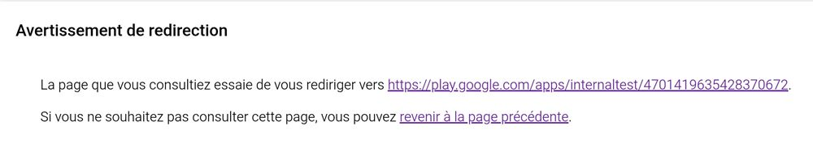
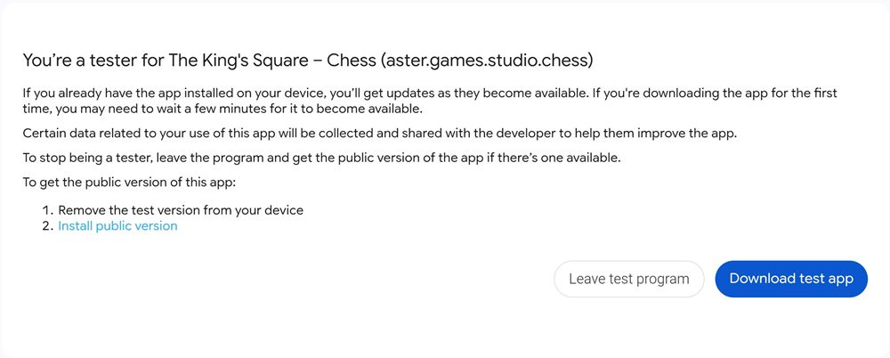
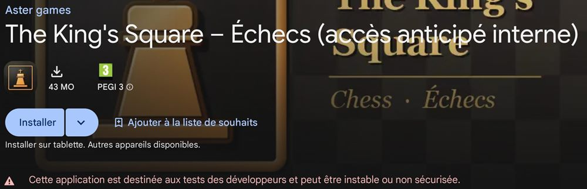
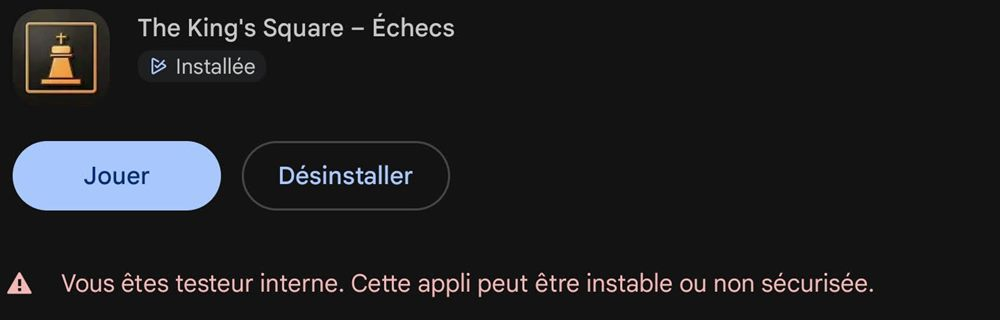

Become a tester
Thank you for testing The King's Square before its release on Google Play! Installing it takes two minutes. Along the way, Google shows a few warnings: they are normal for any app in testing, here is what to expect.
Before you start
- An Android phone or tablet (the game is not available on iPhone).
- The Gmail address of the Google account used in the Play Store on that device. That is the address to send us: with another address, Google will not let you install the game.
1. Wait for the invitation link
Once we receive your address, we add it to the testers list, then send you the invitation link a few hours later: Google takes a while to validate a new address. A link opened too early leads to an "Item not found" page.
2. Open the link on your Android device
Open the link on the phone or tablet (not on a computer). Depending on the app you open it from (Gmail, WhatsApp…), a "Redirect notice" page may appear first: just tap the link that starts with https://play.google.com/apps/.

3. Accept the invitation
The first time, tap Become a tester. Google then confirms that you are a tester ("You're a tester for The King's Square"). Tap Download test app.

The sentence "Certain data related to your use of this app will be collected…" is standard Google text, shown for every app in testing. The game needs no account, has no ads and sends nothing without your consent (see the privacy policy).
4. Install the game: the red warning is normal
The Play Store opens on the game's page, marked "early access", with a message in red: "This app is for developer testing and may be unstable or insecure". Tap Install.

This red message appears for every app in testing, whatever it is: Google is simply warning that the version is not released yet. It stays on the game's page even after installing ("You're a tester…"): that is normal too.

5. Play and share your feedback
Keep the game installed for at least 14 days and play a few games now and then: Google requires this before allowing the public release. Updates arrive automatically through the Play Store.
A bug, an idea, something unclear? In the game, open the ☰ menu then Send feedback: the game version and your device model are attached automatically.
Troubleshooting
"Item not found" in the Play Store
- Wait an hour or two, then open the link again: your sign-up may not be active yet.
- Check the Play Store account: tap your profile picture at the top right of the Play Store and choose the account whose address you gave us.
- Open the link on the phone, not on a computer.
The "Become a tester" button does not appear
You are probably signed in with another Google account in the browser. Open the link from the phone's Gmail or Chrome app with the right account, or write to us.
Any other question?
See the Contact page or the game help.